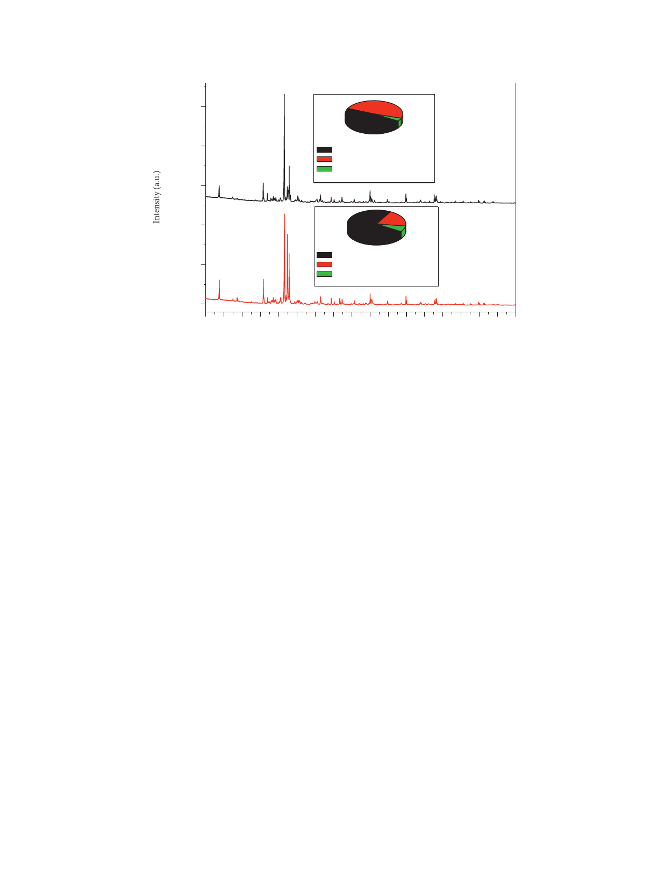

4
International Journal of Microbiology
2,50,000
2,00,000
1,50,000
1,00,000
50,000
0
48.4%
3.9%
47.7%
Quartz
Feldspar
Mica
(a)
Q
19.4%
F
73.8%
6.8%
F
M
Q
Quartz
Feldspar
Mica
(b)
F M M F M MFM MQ QFQ Q F Q F Q Q Q Q
Q: quartz
M: mica
F: feldspar
(a)
(b)
5 10 15 20 25 30 35 40 45 50 55 60 65 70 75 80 85 90
2θ (°)
Figure 1: X-ray analysis of Rosa Porrino (a), Gris Pinhel (b), and mass fraction of main.
correspond to the Si-O vibrations of quartz and 529 cm−1
correspond to O-Si-O bending vibrations [27]. In conclu-
sion, FTIR analysis confirmed qualitatively the existence of
Si components such as quartz, feldspar, and mica previously
shown by the XRD analysis. It should be noted that the
broadband corresponding to the hydroxyl group of Rosa
Porrino sample is a little large compared to the Gris Pinhel
sample, which confirms the existence of a large number of
Si-OH groups on the surface.
To examine the surface side of the granite sample as well
as the elemental composition of both Gris Pinhel and Rosa
Porrino granites, scanning electron microscopy and EDS
analysis were carried out. e results are illustrated in
Figures 3 and 4 for Gris Pinhel and Rosa Porrino, re-
spectively. As can be observed, the optical image
(Figure 3(a)) of the Gris Pinhel is gray in color, with dark
spots on the surface. In the case of Rosa Porrino granite, the
color is pink with black and gray spots (Figure 4(a)). e
SEM images for both ground Gris Pinhel and Rosa Porrino
granites show that both of them are nonspherical without
any porosity. On the other hand, local EDS analysis was
conducted in different spots (S1, S2, and S3) from
Figures 3(c) and 4(c) for Gris Pinhel and Rosa Porrino,
respectively. It was found that silicon and oxygen are the
main elements in both samples, which is normal due to the
existence of quartz and other silicon components (feldspar
and mica) on the surface. Moreover, EDS analysis in dif-
ferent spots confirms that both Gris Pinhel and Rosa Porrino
granite surfaces are heterogeneous.
3.2. Substratum Surface Characterization. Both granites
were analyzed using atomic force microscopy. Figure 5
presents the topography and three-dimensional images of
Gris Pinhel and Rosa Porrino. Table 1 shows the obtained
results of Ra in the nanometer, which presents the mean
distance of the roughness profile to the center plane of the
profile. e roughness value of granite Gris Pinhel is higher
than the one of Rosa Porrino. e first granite’s value is in
agreement with that found by Silva et al. [11] (13.1 ± 2.3 nm),
which is almost the same, whereas our findings were not in
agreement with the reports of Azelmad et al. [13] which
showed that the roughness of the granite Noir Galaxy is
9.1 ± 3 nm. is difference could be due to the kind of
substratum. In addition, Teixeira et al. [8] also determined
the roughness of the granite by using AFM and their result
(43.9 ± 17.9 nm) was higher than ours for both granites. e
roughness was found to be one of the most important factors
in surface properties that certainly affect the adhesion of
bacteria [29].
3.3. Physicochemical Characteristics of the Bacterium and
Substratum Surfaces. In the present study, the physico-
chemical characteristics of P. aeruginosa and of two kinds of
granite (Rosa Porrino and Gris Pinhel) were determined by
using CAM. e results are presented in Table 2. e granite
Gris Pinhel has a hydrophilic character
(ΔGiwi � 24.45 > 0 mJ m2) due to the existence of a large
number of Si-OH groups on the surface, while less number
was remarked on the surface of Rosa Porrino which explains
its hydrophobic character (ΔGiwi � -63, 47 < 0 mJ m−2). In
addition to that, the strong electron donor character of the
granite Gris Pinhel could also be explained by the large
number of hydroxyl groups that existed on this surface
compared with Rosa Porrino with the fewer ones which
explains its low electrons’ donor character. Silva et al. [11]
determined the physicochemical characteristics of the
granite surface. According to their study, the granite surface
is hydrophilic and predominantly electron donor. is result
agrees with our findings concerning the physicochemical
characteristics of granite Gris Pinhel and in disagreement